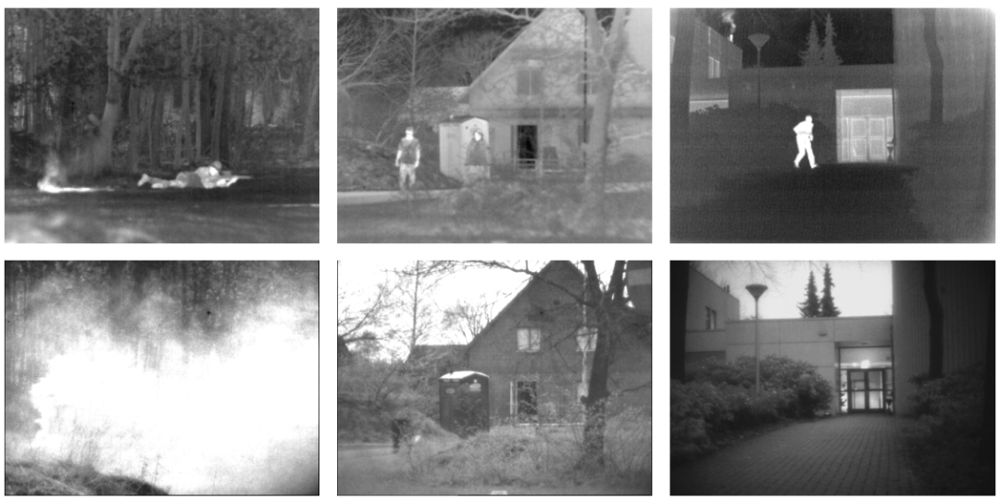

TNO
The TNO Multiband Image Data Collection
TNO多波段图像集目前包含三个独立的图像集：TNO图像融合数据集、Kayak图像融合序列（第一部分和第二部分）以及TRICLOBS动态多波段图像数据集。TNO图像融合数据集包含不同军事和监视场景的增强视觉、近红外和长波红外夜间图像，展示了不同背景下的各种物体和目标。多模态的Kayak图像融合序列包含…

展开完整档案 · TNO
- 研究方向
- 红外与可见光及相关多模态
- 适用任务
- 图像融合：经典与基础数据
- 论文题目
- The TNO Multiband Image Data Collection
- 团队与作者
- Alexander Toet（TNO；数据页更新时间不等于论文发表年份）
- 发表信息
- Data Brief 2017
完整介绍
TNO多波段图像集目前包含三个独立的图像集：TNO图像融合数据集、Kayak图像融合序列（第一部分和第二部分）以及TRICLOBS动态多波段图像数据集。TNO图像融合数据集包含不同军事和监视场景的增强视觉、近红外和长波红外夜间图像，展示了不同背景下的各种物体和目标。多模态的Kayak图像融合序列包含配准的视觉、近红外和长波红外图像序列，展示了在复杂海上背景中接近的三艘皮划艇。TRICLOBS动态多波段图像数据集包含城市环境中动态监视场景的配准视觉、近红外和长波红外运动序列。为了支持开发或实现逼真的色彩重映射程序，该数据集还包含每个场景的彩色照片。作者计划在获得新图像时逐步扩展该数据集的收集。
链接与下载补充说明
- 下载链接
- https://figshare.com/articles/dataset/TNO_Image_Fusion_Dataset/1008029
规模、划分、发表信息、开放状态与使用许可，请以原论文和官方说明为准。本站提供资源索引；原图与数据版权归各自作者所有。